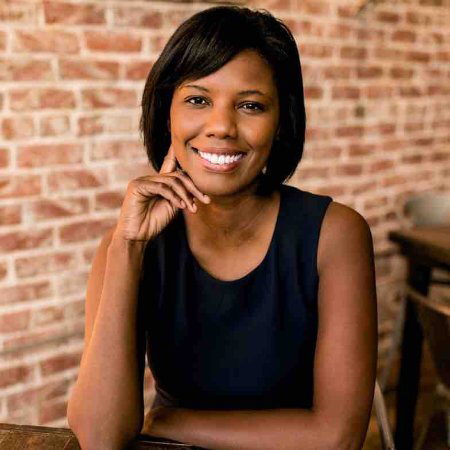
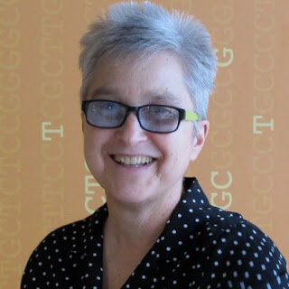

I am interested in engaging young people from all backgrounds in learning about coding and IT while appreciating that the IT profession is about more than coding - it is about design, abstraction, problem solving, critical inquiry, management, listening, and much more.
I am a computer science teacher who wants to bring CS to all students. My day starts with teaching a beginning programming class, then depending on the day I teach AP Computer Science, Cyber Security or a CS Capstone Course.
I’m a technology entrepreneur building companies on the Silicon Prairie. The best part about being an entrepreneur for me is the ability to build an incredible team of people. We get to control who we work with and who we surround ourselves with, and in my opinion that’s the best thing anyone could ask for.
I am a hardworking and driven person with a passion for learning and being a source of motivation to people I meet. I got interested in Technology at a young age when I developed an interest for building and understanding the processes behind mechanisms. I found it fascinating to be able to take an existing process, tool, technology and improve its efficiency and possibly create multiple uses for it.

I’m an entrepreneur, designer and developer that loves: finding new problems to solve, pushing myself outside my comfort zone and good coffee. My thirst for knowledge and how things work was a catalyst to push myself to learn new things. I self taught myself most design and Omaha Code School was a huge contributor to my knowledge of development.
I am someone who enjoys combining technology with helping people. One of my perceived challenges is that I do not currently have a college degree. I have however found that this is only important to a small segment of the IT community, and many are receptive to individuals who work to make a difference...

An ideas person with a love for kittens. My sophomore year in HS I fell into [tech] by accident and then loved it from that day forward!

I am an ambitious, friendly and empathetic tech enthusiast. One of the biggest obstacles for me is that it is tough to be the only African American woman in tech in the room in many cases. I have to work on overcoming that current reality and focus on what I am here to do - empower others through my skills, abilities and network.

Ordinary person dedicated to making extraordinary learning experiences happen for youth and learners of all ages.
I am a local developer and community philanthropist who is leading the charge for Omaha Coding Women as well as helping to organize and bring other tech programs to the local community such as Girls Who Code, Nebraska Javascript Conference, and NodeSchool Omaha.
I’m passionate about technology and always motivated to learn more. I love that I can learn something new every day and enjoy what I learn.